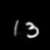

Human interpretation of the world encompasses the use of symbols to categorize sensory inputs. Recent methodshave successfully been able to decompose and disentangle video sequences into their composing objects and dynamics, in a self-supervised fashion. However, there has been scarceeffort in giving interpretability to the dynamics of the scene. We propose a method to decompose a video into moving objects and their attributes, and model each object’s dynamic swith linear system identification tools, by means of a Koopman embedding. This allows interpretation, manipulation and extrapolation of the dynamics of the different objects by employing the Koopman operator K. We test our method in various synthetic datasets and successfully forecast challenging trajectories while interpreting them.

The above figure shows overall architecture of DIVE, which takes the input video with missing data, infers the missingness (red), pose(green) and appearance (blue) latent variables. Two separate decoders reconstruct and predict the future sequences.


Process of moving mnist dataset
Experiments result

example for ddpae circle, left half is ground truth, right half is ddpae result, I can also change it to KIDD compare with ddpae or etc

example for ddpae crop circle, left half is ground truth, right half is ddpae result


example for ddpae sph, left half is ground truth, right half is ddpae result

This part is for introduction
Self attention result
This part is for part2
This part is for part3
This part is for part3